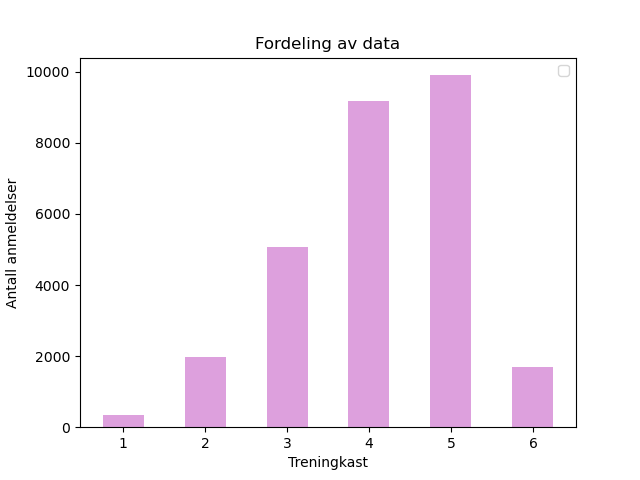

Sentimentanalyse er en klassifiseringsoppgave innen NLP (Natural Language Processing) der målet er å fange opp følelsene i en tekst. En nevralt nettverksmodell blir trent opp på en mengde tekst, et korpus, bestående av filmanmeldelser med tilhørende terningkast, eller annen kategorisert testdata. Jobben til modellen blir å plassere tekst i korrekt klasse. Dette kan være positiv, negativ eller nøytral kategori.
Sentimentklassifisering er en veiledet treningsmetode (eng. supervised learning), det vil si at man har data som inneholder både tekst og label slik at modellen kan trene på fasit.
En problemstilling ute hos mange bedrifter er at de mottar store mengder med henvendelser fra kunder. Dette kan være hyggelige meldinger som ros, eller det kan være sinte klager. Disse kan kundebehandlere bruke mye tid på å komme seg igjennom. En maskinlæringsmodell kan være behjelpelige med å sortere eller behandle lettere saker på vegne av saksbehandlerne. Slik sparer bedriften tid og penger. Og saksbehandlerne kan prioritere de sakene som er viktigst.
Dersom du har en tekst du ønsker å analysere, eller om du bare vil skrive inn noe du selv finner på, så er du hjertelig velkommen til å teste ut modellen vår.
Ved trening av modell med 2 kategorier ble datasettet splittet slik; “negativ”: {terningkast: 1, 2, 3} og “positiv”: {terningkast: 4, 5, 6}. Med 3 kategorier var i utgangspunktet fordelingen følgende; “negativ”: {terningkast: 1, 2}, “nøytral”: {terningkast: 3, 4} og “positiv”: {terningkast: 5, 6}. Men denne modellen ga et langt dårligere resultat enn med 2 kategorier. Dette er jo å forvente, da flere kategorier gjør oppgaven mer kompleks. Men som en alternativ datafordeling testet vi ut følgende; “negativ”: {terningkast: 1, 2, 3}, “nøytral”: {terningkast: 4} og “positiv”: {terningkast: 5, 6}. Resultatet ble en del bedre med denne alternative fordelingen, og vi har derfor valgt å bruke denne.

I figuren over ser vi datamengden fordelt over terningkast. Terningkast 4 og 5 er overrepresentert. Vi har valgt å bruke balansert datasett ved trening av modellene. Dermed blir mye data kuttet ved trening på 3 kategorier i tilfellet fordelingen “negativ”: {terningkast: 1, 2}. Ved å legge til terningkast 3 i samme kategori ble større deler av datasettet tatt med i treningen. Dette er nok forklaringen på at resultatet ble bedre med alternativ fordeling.
Ønsker du å lese mer om hvordan sentimentanalyse fungerer, kan du gå inn på Innovatec sin blogg. Der ligger en post med mer utdypende informasjon om denne sentimentmodellen. Der går vi litt inn på problemer knyttet til data og mangel på data. Vi lagrer data som blir sendt inn til analyse av brukere. Grunnen til dette er nettopp mangelen på treningsdata. Vi ønsker at folk tar i bruk modellen vår, men samtidig ønsker vi å samle opp treningsdata til senere bruk. Vær altså obs på at vi lagrer data.
Til slutt. Denne nettsiden er ikke nødvendigvis rask, og modellene har en predikasjonsnøyaktighet på henholdsvis ≈ 80% og 70% for modell med 2 og 3 kategorier. Eksperimenter og lek gjerne med modellene, og om du har tilbakemelding på noe, er det hjertelig velkomment.